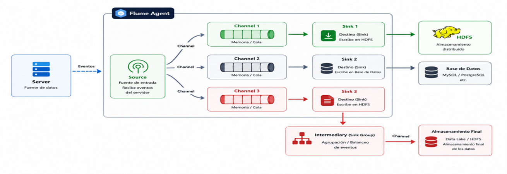
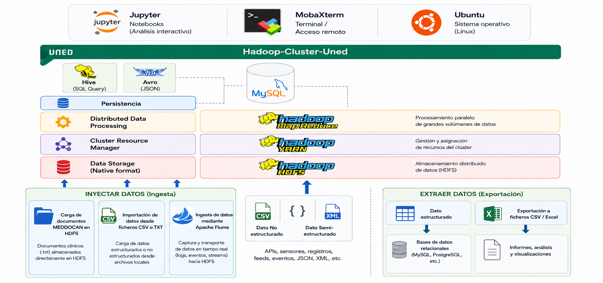

Capítulo 2. Ecosistema de Hadoop
Trabajo Fin de Grado - Arturo Cabello Rodríguez
Trabajo Fin de Grado - Arturo Cabello Rodríguez
La inyección de datos (Data Ingestion) consiste en transferir información desde sistemas externos o sistemas de archivos locales hacia un clúster Hadoop para su almacenamiento, procesamiento y análisis. La calidad de los resultados obtenidos en una plataforma Big Data depende, en gran medida, de disponer de mecanismos eficientes para incorporar datos procedentes de distintas fuentes.
El objetivo de la inyección de datos es una vez cargado toda la información desde diferentes orígenes hacia HDFS para su posterior procesamiento mediante herramientas como MapReduce, Spark, Hive o Pig.

Flujo general de inyección de datos hacia Hadoop.
hdfs dfs -put o hdfs dfs -copyFromLocal.
Apache Flume es una herramienta distribuida desarrollada en Java que permite recopilar, agregar y transportar grandes volúmenes de datos desde diferentes fuentes hacia HDFS.
Está especialmente orientada a la captura de logs, eventos y datos generados de forma continua por aplicaciones o servidores.
| Componente | Función |
|---|---|
| Source | Recibe los eventos desde la fuente de datos. |
| Channel | Almacena temporalmente los eventos. |
| Sink | Envía los datos al destino final (HDFS, HBase, etc.). |
Los conjuntos de datos utilizados durante el curso, descritos previamente en el apartado de Datasets, serán incorporados al sistema de archivos distribuido HDFS mediante los comandos Hadoop correspondientes. Posteriormente serán procesados utilizando Hadoop Streaming y los resultados obtenidos podrán ser almacenados en sistemas externos como MySQL para facilitar su explotación y análisis.
Durante este proceso, los datos podrán almacenarse utilizando diferentes formatos de serialización como CSV, Avro o Parquet, optimizando tanto el almacenamiento como el rendimiento de lectura y escritura dentro del ecosistema Hadoop.

Flujo de datos dentro de la arquitectura Cluster-UNED.
El ecosistema Hadoop dispone de múltiples mecanismos para incorporar datos desde diferentes fuentes.La correcta gestión de la entrada y salida de datos constituye uno de los aspectos fundamentales en cualquier arquitectura Big Data. Tras completar esta lección, el estudiante será capaz de incorporar información al clúster Hadoop, administrar ficheros distribuidos, automatizar procesos de ingesta mediante Apache Flume y preparar los datos para su posterior procesamiento utilizando las distintas tecnologías del ecosistema Hadoop.